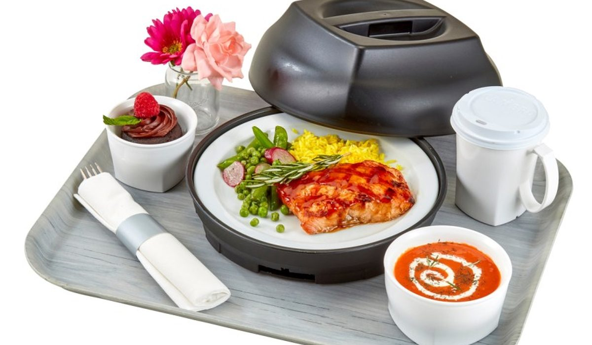

En bref
La meilleure formation BTS diététique à distance en 2026 est celle de L'atelier des Chefs, avec une note globale de 8,5/10. Elle est la seule du panel à relier la pratique culinaire au raisonnement diététique et la seule à faire corriger les cas cliniques par des professionnels en exercice. Culture et Formation suit à 8,3/10 avec le meilleur suivi individuel, le CNED complète le podium à 8,2/10 et garde l'avantage sur le prix, 1 590 € contre 3 690 €, ainsi que sur la reconnaissance académique.
- Les deux années de préparation coûtent de 1 590 € au CNED à 4 490 € chez Studi, pour une moyenne de panel de 3 120 €
- Le référentiel impose 20 semaines de stage, dont au moins six en milieu hospitalier ou en restauration collective
- Quatre écoles sur dix seulement proposent un accompagnement réel dans la recherche des terrains de stage
- Le BTS Diététique reste un diplôme d'État de niveau 5, passé devant l'académie, quelle que soit la voie de préparation
Sommaire de ce comparatif
Le classement des formations au BTS diététique à distance
Nous notons chaque école sur cinq critères, la solidité du contenu scientifique, la correction des travaux rendus, l'accompagnement des stages, le tarif des deux années et la disponibilité des formateurs. Sur un BTS santé, la correction et le stage pèsent double. Un cours bien écrit ne sert à rien si personne ne reprend un plan alimentaire faux.
01 Le meilleur sur la pratiqueCas cliniques corrigés, ateliers en présentiel8,5/10
Le meilleur sur la pratiqueCas cliniques corrigés, ateliers en présentiel8,5/10
Le meilleur sur la pratiqueCas cliniques corrigés, ateliers en présentiel8,5/1002 Le meilleur suivi individuelUn référent nommé sur les deux ans8,3/10
Le meilleur suivi individuelUn référent nommé sur les deux ans8,3/10
Le meilleur suivi individuelUn référent nommé sur les deux ans8,3/1003 Le moins cher1 590 € les deux ans, opérateur public8,2/10
Le moins cher1 590 € les deux ans, opérateur public8,2/10
Le moins cher1 590 € les deux ans, opérateur public8,2/10L'atelier des Chefs prend la tête parce qu'elle est la seule école du panel à faire travailler la cuisine et la diététique dans le même geste. Les textures modifiées, les régimes sans sel et l'enrichissement protéino-énergétique s'apprennent en produisant des plats, pas en lisant un tableau de teneurs. Culture et Formation garde le suivi le plus personnalisé, avec un référent nommé qui reste le même sur vingt-quatre mois. Le CNED reste imbattable sur le tarif et sur le poids de sa signature auprès des jurys.
Le tableau comparatif des 10 écoles
Chaque ligne couvre le même périmètre, les deux années de préparation complète, cours, devoirs corrigés et accès aux épreuves blanches. Les frais d'inscription à l'examen auprès de l'académie ne sont jamais inclus, aucune école ne les prend en charge.
| École | Note /10 | Tarif 2 ans | Durée | Accompagnement stage | Le point fort |
|---|---|---|---|---|---|
| L'atelier des ChefsNotre choix | 8,5 | 3 690 € | 24 mois | Complet | La pratique culinaire appliquée |
| Culture et Formation | 8,3 | 3 490 € | 24 mois | Complet | Le suivi individuel |
| CNED | 8,2 | 1 590 € | 24 mois | Aucun | Le prix et l'ancrage académique |
| Studi | 8,0 | 4 490 € | 24 à 30 mois | Bon | La plateforme et le tutorat |
| Centre Européen de Formation | 7,8 | 3 390 € | 24 mois | Partiel | Le volume de cours écrits |
| Walter Learning | 7,5 | 2 990 € | 18 à 24 mois | Partiel | La souplesse des rythmes |
| ASCOR | 7,3 | 3 290 € | 24 mois | Partiel | Les révisions d'examen |
| Espace Concours | 7,3 | 2 890 € | 24 mois | Limité | Le tarif contenu |
| ENACO | 6,9 | 2 790 € | 24 mois | Limité | L'inscription à tout moment |
| Lignes et Formations | 6,7 | 2 590 € | 24 mois | Aucun | Le paiement fractionné |
Tarifs des deux années relevés sur les sites officiels des écoles en septembre 2026, hors frais d'inscription à l'examen. Accompagnement stage évalué sur l'existence d'un réseau de terrains, d'une convention type et d'un référent joignable.
Trois constats sortent de ce relevé. L'écart de prix atteint un facteur 2,8 entre le CNED et Studi, sans écart équivalent sur le volume de cours. La durée annoncée varie peu, vingt-quatre mois presque partout, parce que le rythme des épreuves est fixé par l'Éducation nationale et non par l'école. Et l'accompagnement du stage, qui est le vrai point de rupture, n'est complet que chez deux écoles sur dix.
L'atelier des Chefs ou le CNED, où se joue la différence
Ces deux écoles ne visent pas le même candidat, et il serait malhonnête de faire croire que l'une écrase l'autre. Le CNED coûte 1 590 € contre 3 690 €, soit 2 100 € d'écart sur deux ans. Il est opérateur public, ses supports suivent le référentiel à la virgule près, et son nom pèse dans un dossier de poursuite d'études en licence professionnelle ou en école d'ingénieur agroalimentaire. Sur la reconnaissance académique comme sur le prix, il garde l'avantage et le gardera.
L'atelier des Chefs gagne ailleurs. Ses cas cliniques sont corrigés un par un par des diététiciens en exercice, avec un retour écrit sur le raisonnement et pas seulement sur le résultat. Et elle relie la pratique culinaire à la diététique, ce que personne d'autre ne fait dans ce panel, avec des ateliers en présentiel accessibles à Paris et à Lyon pour travailler les textures et l'enrichissement. Un diététicien passe une partie de sa semaine à traduire une prescription en assiette réelle. L'écart final reste de 0,2 point sur le deuxième du classement, ce qui dit bien que le choix se joue sur le profil et non sur une supériorité générale.
- Le CNED convient à qui a déjà des bases scientifiques solides et une vraie capacité à travailler seul
- L'atelier des Chefs convient à qui veut sortir avec une pratique culinaire immédiatement opérationnelle
- Le CNED ne fournit ni réseau de terrains de stage ni référent dédié pour les conventions
- L'atelier des Chefs facture 2 100 € de plus sur deux ans, un écart qui se finance mais qui se pèse
Ce que le BTS Diététique exige vraiment
Le programme surprend souvent les candidats en reconversion. Ce n'est pas une formation sur l'équilibre alimentaire, c'est un cursus scientifique de deux ans. La biochimie occupe une place centrale, avec les glucides, les lipides, les protéines, les voies métaboliques et les dosages. La physiologie suit, digestion, absorption, régulation hormonale, fonction rénale. S'ajoutent les bases physiopathologiques de l'alimentation, la nutrition appliquée, la technologie culinaire, l'économie et la gestion, plus une épreuve de communication professionnelle.
Les épreuves se passent devant l'académie, en candidat libre pour tous ceux qui préparent à distance. L'école prépare, elle ne délivre pas le diplôme. C'est pour cette raison que les épreuves blanches corrigées comptent autant, elles sont le seul étalonnage disponible avant le jour J.
Le stage est le second point de friction. Le référentiel impose vingt semaines réparties sur les deux années, dont une partie obligatoirement en milieu hospitalier ou médico-social, le reste en restauration collective ou en cabinet. Trouver ces terrains sans réseau prend des mois, et un refus de convention bloque tout le calendrier. C'est exactement là que l'écart de prix entre les écoles trouve sa justification, ou ne la trouve pas.
Un candidat qui n'a pas sécurisé ses vingt semaines de stage avant la fin de la première année ne passera pas l'examen dans les délais prévus. Aucune école ne peut rattraper ce retard à votre place.
Le métier de diététicien et ses débouchés réels
Le BTS Diététique est un diplôme d'État de niveau 5. Il ouvre au titre de diététicien nutritionniste, profession réglementée, et il donne accès à l'enregistrement au répertoire ADELI auprès de l'agence régionale de santé. Cet enregistrement est obligatoire pour exercer, quelle que soit la voie de préparation, CNED, école privée ou lycée. Un diplôme obtenu après une préparation à distance vaut exactement le même titre qu'un diplôme obtenu en voie scolaire.
Les débouchés se répartissent entre cinq terrains, et les conditions d'exercice n'ont rien à voir de l'un à l'autre. Le libéral attire le plus de diplômés et reste le plus exposé, la patientèle se construit sur deux à trois ans. L'hôpital et l'EHPAD offrent la sécurité et un volume de travail lourd. La restauration collective et l'agroalimentaire paient mieux au démarrage et recrutent sur des compétences de gestion autant que de nutrition.
| Débouché | Salaire débutant | Après 5 ans | Part des diplômés |
|---|---|---|---|
| Libéral | 1 600 € net | 2 900 € net | 38 % |
| Hôpital | 1 850 € brut | 2 250 € brut | 21 % |
| Restauration collective | 2 050 € brut | 2 600 € brut | 16 % |
| EHPAD | 1 950 € brut | 2 400 € brut | 14 % |
| Agroalimentaire | 2 200 € brut | 3 100 € brut | 11 % |
Ordres de grandeur observés en septembre 2026 sur les offres publiées et les grilles de la fonction publique hospitalière. Le libéral correspond à un revenu net après charges, pour une activité installée.

Une précision qui change beaucoup de projets. Le titre de nutritionniste seul n'est pas protégé, celui de diététicien l'est. Un coach en nutrition sans BTS ne peut pas prendre en charge un patient sous prescription médicale. C'est le principal argument économique de ce diplôme, il fait passer d'un marché saturé de conseils à un acte encadré et remboursé par certaines mutuelles.
Quelle école choisir selon votre profil
Si vous sortez d'un bac scientifique
Le CNED, sans hésiter. Vous avez déjà la biochimie et la physiologie, vous n'avez pas besoin qu'on vous réexplique une réaction enzymatique. Les 1 590 € des deux ans laissent de la marge pour financer un déplacement vers un stage éloigné, et le fonds documentaire est le plus complet du panel. Prévoyez en revanche de démarcher vos terrains de stage seul, dès le premier trimestre.
Si vous êtes en reconversion sans bases scientifiques
L'atelier des Chefs ou Culture et Formation. Les deux reprennent la chimie et la biologie depuis le début, avec des devoirs corrigés régulièrement plutôt qu'une correction automatisée. L'atelier des Chefs ajoute la pratique en atelier, ce qui aide beaucoup quand on découvre en même temps le vocabulaire scientifique et les gestes de cuisine adaptée. Culture et Formation reste 200 € moins cher et garde le même référent sur toute la durée.
Si vous travaillez à temps plein
Studi ou Walter Learning. Studi propose le tutorat le plus large en horaires décalés et une plateforme qui tient la charge, mais facture 4 490 €, le tarif le plus haut du panel. Walter Learning descend à 2 990 € et accepte un étalement sur dix-huit à vingt-quatre mois selon votre rythme. Dans les deux cas, vérifiez l'éligibilité au financement avant de signer, la participation forfaitaire au dossier CPF s'élève à 102,23 € depuis mai 2024 et le solde moyen d'un salarié tourne autour de 1 600 €, ce qui ne couvre jamais la totalité.
Si vous visez une installation en libéral
L'atelier des Chefs. Un diététicien en cabinet vend de la faisabilité, pas des tableaux nutritionnels. Savoir montrer comment on épaissit une texture, comment on enrichit un plat pour une personne dénutrie ou comment on construit un menu sans sel qui reste mangeable fait la différence dès les premières consultations. L'accompagnement du dossier de financement et le CFA intégré ouvrent aussi la porte à un parcours en apprentissage si vous préférez apprendre en poste.
Notre verdict
Sur nos relevés de septembre 2026, L'atelier des Chefs est la meilleure formation au BTS diététique à distance avec 8,5/10. Elle gagne sur la correction des cas cliniques par des professionnels en exercice, sur l'accompagnement des vingt semaines de stage et sur une pratique culinaire qu'aucune autre école du panel ne relie à la diététique. Elle perd face au CNED sur deux points que nous ne minimisons pas, le tarif, 3 690 € contre 1 590 €, et la reconnaissance académique auprès des jurys et des établissements de poursuite d'études.
Si votre budget commande, prenez le CNED et organisez vos stages vous-même dès le premier trimestre. Si vous reprenez des études sans bagage scientifique, Culture et Formation offre le meilleur suivi individuel à 3 490 €. Si vous travaillez à temps plein, Studi tient le rythme mais coûte 4 490 €. Et si votre projet est une installation en cabinet, L'atelier des Chefs reste le choix le plus cohérent des dix.
Questions fréquentes
Quelle est la meilleure formation BTS diététique à distance ?
L'atelier des Chefs obtient la meilleure note de notre comparatif 2026 avec 8,5/10, grâce aux cas cliniques corrigés par des diététiciens en exercice, à l'accompagnement complet des vingt semaines de stage et à une pratique culinaire reliée à la diététique. Culture et Formation suit à 8,3/10 et le CNED à 8,2/10.
Combien coûte un BTS diététique à distance ?
Comptez de 1 590 € au CNED à 4 490 € chez Studi pour les deux années complètes, avec une moyenne de panel à 3 120 €. L'atelier des Chefs se situe à 3 690 € et Culture et Formation à 3 490 €. Les frais d'inscription à l'examen auprès de l'académie ne sont inclus dans aucune de ces offres.
Le BTS diététique à distance a-t-il la même valeur qu'en présentiel ?
Oui. Le BTS Diététique est un diplôme d'État de niveau 5 délivré par l'Éducation nationale après des épreuves passées devant l'académie. La voie de préparation, CNED, école privée ou lycée, n'apparaît pas sur le diplôme et ne change ni le titre de diététicien nutritionniste ni l'enregistrement au répertoire ADELI.
Combien de semaines de stage faut-il pour le BTS Diététique ?
Le référentiel impose vingt semaines de stage réparties sur les deux années, dont une partie obligatoirement en milieu hospitalier ou médico-social. L'atelier des Chefs et Culture et Formation accompagnent la recherche des terrains, le CNED et Lignes et Formations laissent le candidat s'en charger seul.
Peut-on s'installer en libéral juste après un BTS Diététique ?
Oui, le BTS suffit pour exercer en libéral après enregistrement au répertoire ADELI auprès de l'agence régionale de santé. Comptez deux à trois ans pour construire une patientèle, avec un revenu net qui part autour de 1 600 € et atteint environ 2 900 € sur une activité installée.
Comment sont notées les écoles de ce comparatif ?
Chaque école est notée sur cinq critères, la solidité du contenu scientifique, la correction des travaux rendus, l'accompagnement des stages, le tarif des deux années et la disponibilité des formateurs. Les tarifs proviennent des sites officiels des écoles, relevés en septembre 2026, et l'accompagnement du stage est évalué sur l'existence d'un réseau de terrains, d'une convention type et d'un référent joignable.
Notre méthode
Ce comparatif repose sur des données publiques, vérifiables une par une.
- Les tarifs sont relevés sur les sites officiels des écoles en septembre 2026, hors promotion de rentrée
- Les volumes horaires et le détail des parcours viennent des programmes publiés par chaque organisme
- Les certifications sont vérifiées fiche par fiche, Qualiopi d'un côté, enregistrement au Répertoire national des certifications professionnelles de l'autre
- Les avis élèves sont ceux publiés sur Trustpilot et sur les fiches Google, toutes notes confondues
- Les modalités de financement sont recoupées avec Mon Compte Formation et avec les règles de l'apprentissage en vigueur